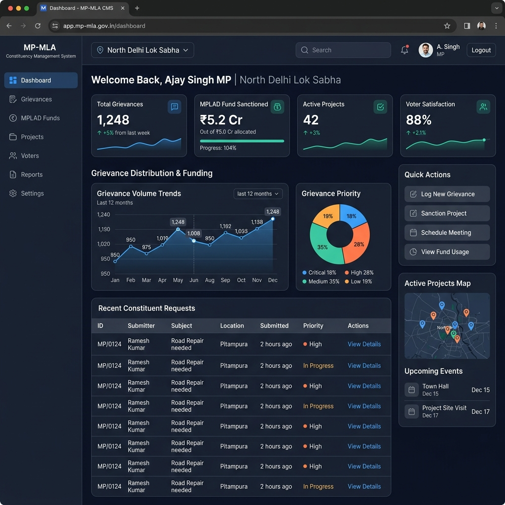
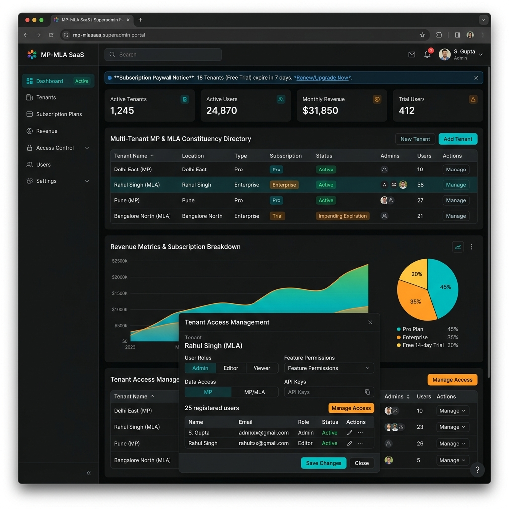
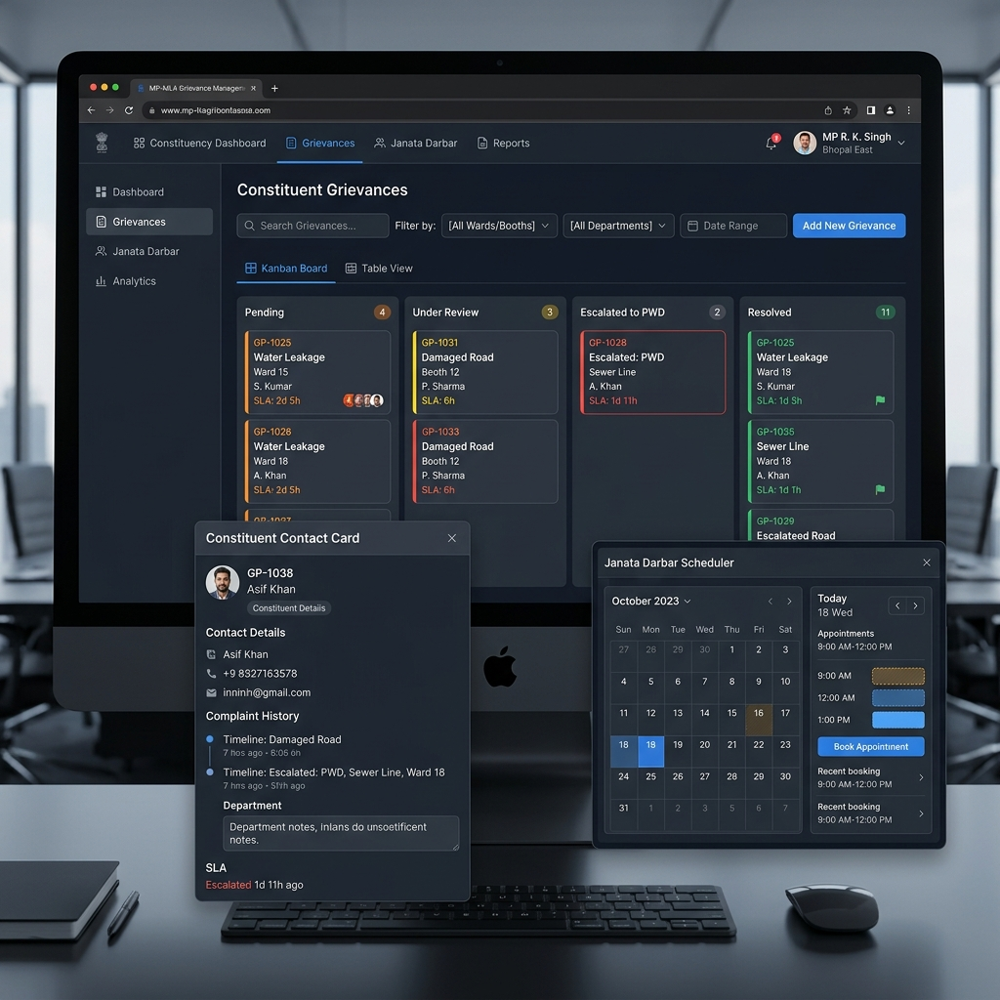
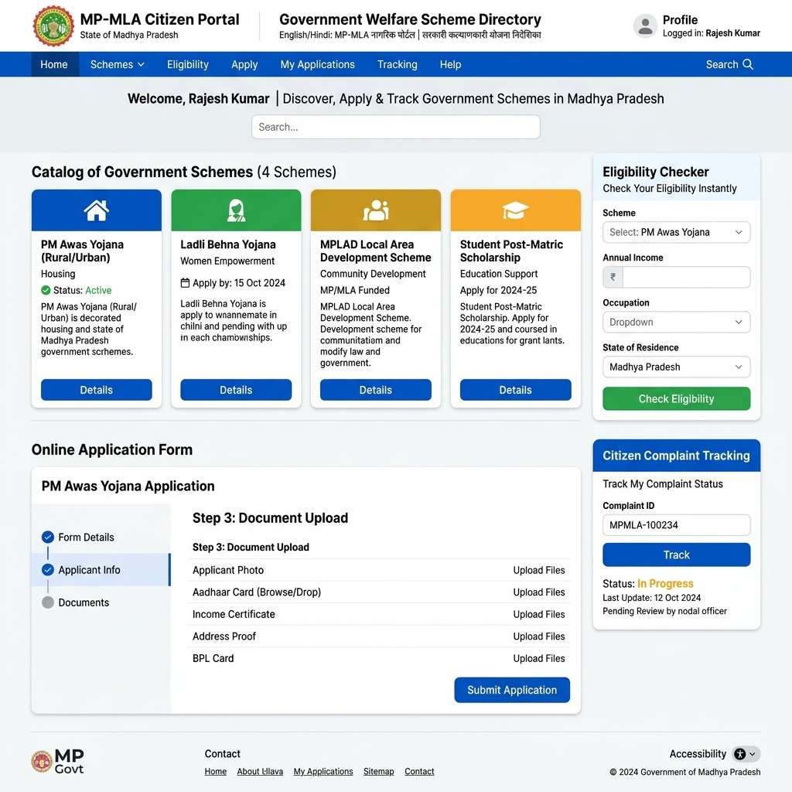

MP-MLA Constituency Management Platform
Complete User Manual, System Architecture, & Comprehensive Module Walkthrough
🚀 1. Introduction & Overview
Welcome to the official documentation for the MP-MLA Constituency Management SaaS Platform. This Enterprise SaaS solution empowers Members of Parliament (MP), Members of Legislative Assembly (MLA), their office secretariats, and departmental officials to efficiently manage constituent grievances, track MPLAD fund allocations, schedule Janata Darbar appointments, deliver government welfare schemes, and organize targeted electoral campaigns.
System Core Capabilities
- Real-time Grievance Tracking: AI-assisted categorization, SLA timers, and department escalation matrices.
- Janata Darbar Token Engine: Automated appointment booking, walk-in token generation, and hearing logs.
- MPLAD & Local Funds Audit: Transparent sanctioning, installment tracking, and geo-tagged progress photo uploads.
- Welfare Scheme Eligibility Engine: Instant matching of constituents with state/central scheme benefits.
- Demographic & Voter Analytics: Ward-level and booth-level electoral intelligence maps.
🏗️ 2. Platform Architecture & Modules
The MP-MLA platform comprises four interconnected sub-systems designed for distinct user roles:
| Sub-System | Target Audience | Primary Functions | Access URL |
|---|---|---|---|
| Master Dashboard | Superadmin / SaaS Owner | Tenant Onboarding, Subscription Plans, Paywall Controls, Audit Logs | /master-dashboard |
| Constituency Portal | MP/MLA, Office Staff, Dept Heads | Grievances, MPLAD Funds, Janata Darbar, Voter Roll, PR Creatives | /dashboard |
| Citizen Web Portal | General Citizens / Constituents | Submit Complaint, Scheme Eligibility, Track Token, Book Janata Slot | /public |
| Field Officer App | Ground Officers, Desk Counters | Task Dispatch, Geo-location Verification, On-site Grievance Verification | /field |

🔐 3. User Roles & Permission Matrix
Security and governance are enforced through strict Role-Based Access Control (RBAC):
| Role Name | Constituency Scope | Grievances | MPLAD Funds | Janata Darbar | Settings & Billing |
|---|---|---|---|---|---|
| Super Admin | Global (All Tenants) | Full Access | Full Access | Full Access | Full Master Controls |
| MP / MLA | Assigned Constituency | Full Read / Approve | Sanction & Approve | Conduct Hearings | Constituency Settings |
| Office Secretariat | Single Constituency | Create, Assign, Escalated | Track Expenses | Manage Tokens | No Billing Access |
| Department Officer | Departmental Scope | Update Action Taken | View Project Scope | No Access | No Access |
| Citizen User | Self Submissions | Submit & Track Own | View Public Projects | Book Appointments | No Access |
🏢 4. Superadmin Master Dashboard & Tenant Onboarding
The Master Dashboard provides SaaS administrators with full multi-tenant control, allowing quick onboarding of new MP or MLA constituencies in minutes.
Navigate to Tenant Management
Log in as Superadmin at /master-dashboard/login and click on Tenants Directory from the side navigation menu.
Provision New Constituency Account
Click Add New Tenant. Enter Representative Name (e.g. Hon. Ajay Singh MP), Constituency Type (Lok Sabha / Vidhan Sabha), State, and Assign Subdomain.
Assign Subscription Plan & Admin User
Select plan tier (14-Day Free Trial, Pro Plan, Enterprise Plan) and set initial Admin credentials. The tenant receives automated welcome onboarding instructions via email.

💳 5. SaaS Subscriptions, Free Trial & Paywall System
The platform incorporates an automated Subscription Lifecycle Engine to manage free trial periods, subscription renewals, and feature paywall lockouts.
Plan Breakdown
- 14-Day Free Trial: Full feature access for up to 5 office staff accounts, 100 active grievances, and basic reports.
- Pro Plan (Constituency Tier): Unlimited grievances, Janata Darbar token engine, Field Officer GPS tracking, 10 GB file vault.
- Enterprise Plan (State/Party Tier): Multi-constituency aggregation, AI Sentiment Analytics, Custom Subdomain, Dedicated Account Manager.
🛡️ 6. System Audit Logs & Data Recovery (Recycle Bin)
To maintain strict compliance and transparency in governance, all administrative actions, data edits, and status transitions are recorded in immutable system audit logs.
📊 7. Constituency Executive Dashboard
The Executive Dashboard serves as the central command post for the MP or MLA. It consolidates real-time feeds from all constituency wards into actionable metrics.
Core Dashboard Widgets:
- Total Grievances Metric: Live counters for Pending, Under Review, Escalated, and Resolved issues.
- MPLAD Sanction vs Expenditure Gauge: Displays total sanctioned funds (e.g. ₹5.2 Cr) vs released installments and spent balance.
- Voter Satisfaction Score: Aggregate satisfaction percentage calculated from resolved complaint feedback ratings.
- Quick Action Command Bar: One-click shortcuts to Log New Grievance, Sanction Project, Schedule Janata Meeting, or Generate Creatives.
📋 8. Grievances & Complaint Lifecycle Management
Constituent grievances are routed through an automated SLA-monitored lifecycle to ensure no public issue is neglected.

Grievance Workflow Steps:
Complaint Intake & Categorization
Complaints received via Public Portal, Walk-in Counter, or Helpline are logged into the system. The AI engine auto-suggests Department (PWD, Water, Electricity) and Priority (Critical, High, Medium, Low).
Department Escalation & SLA Clock
The issue is assigned to the respective Nodal Officer with an automated SLA countdown timer (e.g., 48 hours for Water Leakage). If unanswered, it escalates to the MP/MLA Secretariat.
Action Taken & Resolution Sign-Off
Department officers upload proof of work (photos/notes). Upon constituent confirmation via SMS/Call, the grievance status is updated to Resolved.
👥 9. Janata Darbar & Public Audience Scheduler
Janata Darbar enables direct public interaction with the elected representative while streamlining crowd flow.
- Digital Token Generator: Issue numbered tokens for walk-in constituents with time slots to prevent long waiting times.
- VIP & Emergency Priority Tags: Flag senior citizens, urgent medical requests, or official delegations for priority audience.
- Live Hearing Minutes: Office secretaries record MP/MLA verbal instructions directly against constituent profiles during hearings.
💰 10. Development Works & MPLAD Fund Tracking
Track local constituency development projects funded through MPLAD (Member of Parliament Local Area Development Scheme) or MLA Local Area Development funds.
Project Execution Stages:
- Proposal & Feasibility Study: Inception of public infrastructure requests (Roads, Community Halls, Schools).
- Administrative Sanction: Official approval and budget allocation from District Magistrate / Collector office.
- Work Order & Contractor Bidding: Tender assignment to verified contractors.
- Stage-wise Geo-tagged Progress: Field staff upload site photos with GPS coordinates at 25%, 50%, 75%, and 100% completion.
📜 11. Government Welfare Schemes & Beneficiary Matching
The Welfare Scheme engine connects eligible constituents with central and state government schemes (e.g. PM Awas Yojana, Ladli Behna Yojana, Student Scholarships).

📱 12. Field Officers & Desk Counter CRM
Extend office operations directly to the field. Field officers use mobile devices to verify complaint resolution on site.
- GPS Geo-fencing: Ensures field staff check-in at actual complaint locations before marking tickets as resolved.
- Offline Mode Support: Allows officers in rural areas with low network coverage to store photos and sync when reconnected.
🌐 13. Citizen Public Web Portal
The Citizen Portal provides a zero-friction interface for constituents to interact with their MP or MLA office online.
- Track Complaint without Login: Enter unique Grievance Token ID (e.g.
GP-1038) to view live status and assigned officer contact. - Book Janata Darbar Slots: Reserve morning or afternoon meeting slots online.
- Emergency Helplines & Facility Map: Find nearest government hospitals, police stations, and constituency office locations.
🎨 14. Meetings, Press Vault & PR Banner Generator
Manage constituency public relations and social media outreach effortlessly.
- Press Release Vault: Store official press statements, media photos, and speech transcripts.
- Social Media Creatives Generator: Automatically overlay constituency branding, MP/MLA photos, and event titles onto festival wish banners and project launch graphics.
❓ 15. Frequently Asked Questions & Technical Support
Q1: How do I renew my constituency subscription when trial ends?
Superadmins or Office Managers can click Upgrade Plan on the paywall banner or navigate to /settings/subscription to process renewal via debit/credit card or official bank transfer.
Q2: Can constituents track their grievances on mobile?
Yes. Constituents receive SMS notifications containing direct tracking links. They can also open /public on any mobile browser and enter their token ID.
Q3: How is constituent personal data secured?
All data is encrypted in transit (TLS 1.3) and at rest (AES-256). Multi-tenant isolation ensures data from one constituency is never accessible by another tenant.